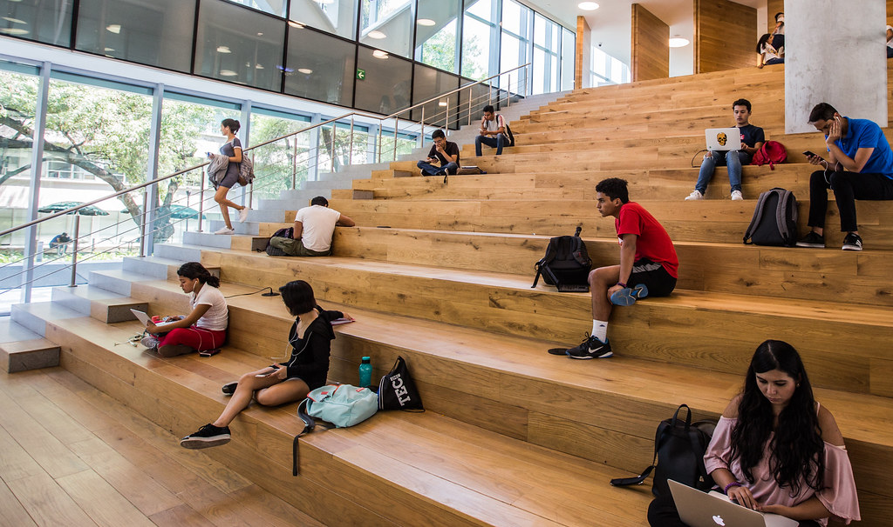

PORTAL_ALUMNOS

Misión

Desarrollar una ardua investigación y brindar formación profesional, a estudiantes de institutos, con un servicio de calidad, manteniendo su idenditad y transfiriéndola para el desarrollo regional y nacional, con responsabilidad social
Visión
Permitir que todos nuestros estudiantes tengan una educación de gran calidad, con una plataforma amigable para ellos donde puedan encontrar mas información relacionada con respecto a la carrera técnica de su preferencia .